تقارير التلج · نونبر 2026
تقارير يومية ديال التلج للي كيتزلجو: فين كاين التلج، شنو جاي، وفين تمشي تتزلج، من الخريطة ديال التلج ديال SnowScope ومحطات القياس. كل رقم جاي من المعطيات ديال داك النهار.

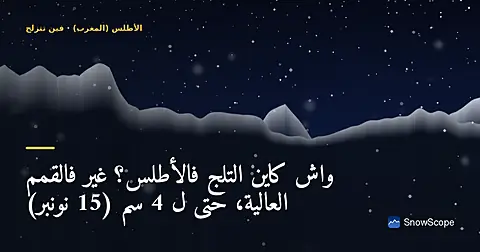
واش كاين التلج فالأطلس اليوم؟ ماكاينش التلج فالبيستات ديال الأطلس اليوم. التلج مخزون غير فالقمم العالية: تقريبا 20 كم² ديال الأرض، حتى ل 4 سم فالعمق. …

Beaver Mountain كيطبق ثمن واحد للكبار $75 للموسم 2026-27. التاريخ ديال التلج عندنا كيقول بلي بداية دجنبر هناك بزاف ديال الحظ؛ السيمانة اللي قبل Noël أكثر أمانة.

تيكي الكبار ديال Bridger Bowl لـ2026/27 هو 86 $ أونلاين، 99 $ فالكيشي. التاريخ ديالنا كيقول منتصف دجنبر عملية حظ فنص الجبل؛ آخر دجنبر أضمن.


التيكي ديال الكبار فـLookout Pass لـ2026-2027 هو 63 $ وسط السيمانة بالحجز، و75 $ فالويكاند. نص الجبل كان فيه 20 in (50 cm) حتى 15 دجنبر ف85 % ديال الشتوات اللي فاتو.

التيكي ديال الكبار ديال Montana Snowbowl لـ2026/27 هو 78 $ وسط السيمانة و85 $ فالويكاند. نص الجبل كان فيه 20 in (50 cm) حتى 15 دجنبر ف83 % ديال الشتوات اللي فاتو.

Ski Cooper خلات ثمن الكبار وسط السيمانة فـ49 $ لـ2026-27 (99 $ فالويكاند). نص الجبل فالغالب فيه 26 in (66 cm) ديال التلج ف15 دجنبر، 70 % ديال الشتوات فوق 20 in.

التيكيات ديال Sunlight كتبدا من 74 $ وSunny 6 Pack ثمنها 349 $ إلا شريتيها قبل 30 نوفمبر 2026. نص الجبل كان فيه 20 in (50 cm) حتى 15 دجنبر ف72 % ديال الشتوات.
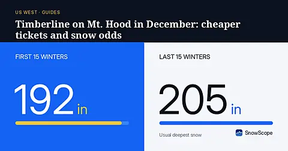
فورفي النهار الكامل ف Timberline هو 129 $ فوقت العادي و161 $ فوقت الذروة؛ فورفي العشية هو 96 $ فوقت العادي. الوسط ديال الجبل كيبقى عادة عندو 52 in (132 cm) حتى ل15 دجنبر.

من Ski Cooper (49 $ فوسط السيمانة، 99 $ فالويكاند) حتى Mt. Baker (98.80 $ مقابل 115.42 $): فروقات الأثمنة ديال دجنبر اللي تأكدنا منهم فسبع محطات فالغرب الأمريكي، مع فرص التلج ديالهم.

3-Pack ديال Schweitzer لموسم 2026/2027 ثمنو 249 $، أي 83 $ فالنهار حسب حساب المحطة نفسها. القمة فالغالب كتحافظ على 54 in (138 cm) ديال التلج حتى 15 دجنبر.
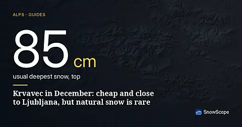
Krvavec فدجنبر: النهار ب 47 EUR و 6 أيام ب 205 EUR، ولكن غير 13 سم فالوسط نهار 15 دجنبر عادي، و 11 شتوة من 46 بلا تلج فهاد النهار.

تزلج ف 157 كم ديال البيست ف Serre Chevalier، فين القمة ديال الجبل عندها 100 % ديال الاحتمال يكون فيها التلج ف نص دجنبر.

Turracher Höhe فدجنبر: 23 سم فالوسط نهار 15 دجنبر عادي، 39 % ديال الشتوات فيهم 30 سم قبل نوال؛ 6 أيام فالموسم الهادي ب 353 EUR.
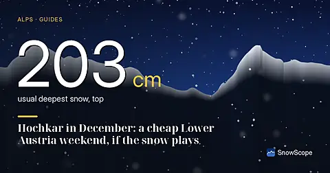
Hochkar فدجنبر: السكيباس ديال نهار شفناه من 32,90 حتى 47,90 EUR حسب التاريخ؛ 38 سم فالوسط نهار 15 دجنبر عادي، ونازل من الثمانينات.

Idre Fjäll فدجنبر: 32 سم فالوسط نهار 15 دجنبر عادي؛ 65 % ديال الشتوات فيهم 30 سم فنص دجنبر، و 76 % فسيمانة نوال. حظوظ بصراحة.

Brighton من 72 $ مقابل Ski Cooper ب49 $ فوسط السيمانة وWolf Creek ب96 $: المحطات الرخاص ديال Utah وColorado مقارنين على 46 شتوة ديال التلج ف دجنبر.

عشرة محطات ديال التلج فـ أوروبا مصنفين على حساب القيمة فـ ديسمبر، كيتصدروهم Les 2 Alpes بـ 75 سم ديال التلج فـ وسط الجبل.

التيكي اليومي ديال Brundage كيبدا من 65 $ فبعض الأيام؛ نص الجبل كان فيه 20 in (50 cm) ديال التلج ف15 دجنبر ف87 % ديال الشتوات اللي فاتو. كاين تواريخ ديال العطل خاص تتجنبها.

Boí Taüll كيبدا من 2039 م وكيغلب Baqueira Beret فالتمن ديال البيست، واخا التلج ديال بدايات دجنبر كيطلب شوية ديال الصبر.
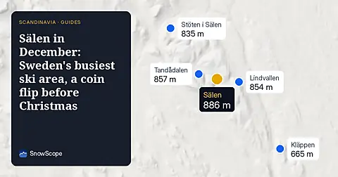
Sälen فدجنبر: 28 سم نهار 15 دجنبر عادي و 48 % ديال الشتوات فيهم 30 سم فنص دجنبر، قل من الثمانينات؛ و Trysil اللي حداها أحسن.

التيكي ديال النهار للكبار ف Snow King كيبدا من 100 $. حسب التاريخ ديال التلج عندنا، العلو ديال التلج فنص الجبل كان 20 in (50 cm) قبل 15 دجنبر ف 87% من الشتوات اللي فاتو: طريقة رخيصة باش تزلج فوادي Jackson.

Orcières Merlette كتوفر قاعدة عالية فـ 1826 م و باص ديال 6 أيام من 227 EUR، هادشي اللي كيخليها اختيار موثوق لرحلة ديال التزلج فديسمبر.

واش Alpe d'Huez مزيانة ف دجنبر 2026؟ حنا كنشوفو التوقعات ديال التلج، والثمن ديال 58,00 EUR، وكنقارنوها مع Les 2 Alpes.

السكيباس فسلوفينيا هو الأرخص (Krvavec ب 205 EUR ل 6 أيام)، ولكن التلج الطبيعي فدجنبر قليل تما؛ Lachtal و Hochkar والكلاسيي ديال Möll أحسن.
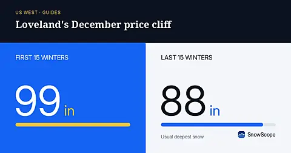
Loveland كتبيع التيكي أونلاين بـ60 $ حتى 13 دجنبر 2026، ومن بعد بـ159 $ فالكيشي. واش العلو ديال التلج فبداية دجنبر كافي؟ 46 ديال الشتوات اللي فاتو كيجاوبو سيمانة بسيمانة.

Cauterets كتوفر 25 كم ديال البيست بـ 46 EUR، ولكن التاريخ ديال التلج عندنا كيبين بلي أحسن فرصة باش تلقى التلج هي السيمانة اللخرة ديال ديسمبر.

السكي ف Lachtal فدجنبر: السكيباس ديال نهار 62 EUR، الدراري حتى ل 6 سنين فابور، 46 سم فالوسط نهار 15 دجنبر عادي، ولكن الاتجاه هابط.

التيكيات أونلاين ديال White Pass كيبداو من 69 $ فوسط السيمانة و89 $ فأيام الذروة، ووسط الجبل كان فيه 20 in (50 cm) ديال التلج نهار 15 دجنبر ف 87% من الشتوات اللي فاتو.

سكي فـ 131 كم ديال البيست فـ Forêt Blanche هاد دجنبر بـ فورفي ديال 6 أيام بـ 298 EUR.

Ruka فدجنبر: السكيباس ديال 6 أيام 265 EUR، النهار 58 EUR؛ 36 سم نهار 15 دجنبر عادي، ولكن غير 39 % ديال الشتوات فيهم 30 سم فالسيمانة الأولى.

ف Monterosa Ski الباص ديال النهار أونلاين ما بين 40.00 و 71.00 EUR. فدجنبر التلج كاين الفوق: 124 سم عادة ف 3030 م، و 6 سم ف 1207 م.

فـ Wolf Creek، التيكي ديال الكبار ثمنه $96 فالأيام العاديين و$110 فالأيام ديال الذروة لموسم 2026-2027؛ فـ نص الجبل كان كاين 34 in (87 cm) ديال التلج فـ 15 دجنبر نموذجي.

Fellhorn/Kanzelwand فدجنبر: 63 سم فالفوق (1965 م) نهار 15 دجنبر عادي، 10 سم لتحت؛ 6 أيام ديال Advent ب 344,50 EUR حتى ل 20 دجنبر.

خطط للرحلة ديالك ف دجنبر 2026 لـ Les Orres وقارن بين تمن البيستات ديال السيمانة والتاريخ ديال التلج اللي عندنا ديال 46 شتوة اللي دازو.

Hemavan فدجنبر: 82 سم فالوسط نهار 15 دجنبر عادي، وكل شتوة فيها 30 سم فنص دجنبر؛ أعمق دجنبر فالمحطات الشمالية اللي قارنا.

التيكي ديال النهار ف Brighton كيبدا ب 72 $ ل 2026/27 إلا شريتي بكري. العلو ديال التلج ف نص المحطة عادة كيكون 37 in (94 cm) نهار 15 دجنبر، مقابل 25 in (64 cm) ف Park City.
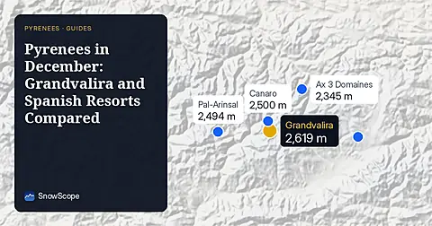
قارن بين Grandvalira والمحطات الصبليونية في دجنبر 2026 من ناحية العلو ديال التلج، العلو ديال ليفات، والأثمنة اللي كتبدا من 49.00 EUR.

Pitztaler Gletscher فدجنبر: 87 سم فالوسط نهار 15 دجنبر عادي، تلج دجنبر كثر من زمان؛ السكيباس ديال نهار 77 EUR و 6 أيام 410 EUR.

16 محطة ديال التزحلق فأمريكا رخاص، مرتبين على حساب فرص التلج ف دجنبر من 46 شتوة اللي فاتو، مع الأثمنة ديال النهار اللي تأكدنا منهم: من 49 $ فوسط السيمانة حتى 125 $ وأكثر.

إيلا بغيتي سيمانة د التزلج للعائلة فديسمبر فـ Astún-Candanchú بتكلفة ناقصة، وجد راسك لأواخر ديسمبر فين كيكون التلج مزيان فـ 67 % من الشتوات اللي فاتو فالجهة الفوقانية.
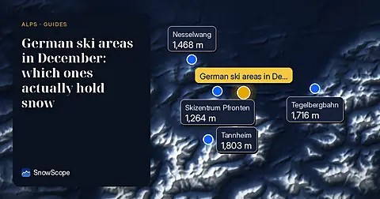
ألمانيا فدجنبر: Zugspitze والفوق ديال Fellhorn كان فيهم 30 سم فنص دجنبر فعلى الأقل 9 شتوات من 10؛ Sudelfeld و Brauneck و Feldberg نادرا.
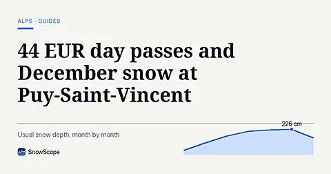
محطة Puy-Saint-Vincent كاتبازي باجي ديال نهار واحد للبالغين بـ 44 EUR مع تلج صحيح فـدجنبر الفوق، ومقارنة هادي مع الجار الكبير ديالها Serre Chevalier.

ف الـ46 شتوة اللي فاتو عندنا، عند mid-mountain ديال Grand Targhee كان ديما عندها 20 in (50 cm) ولا كثر نهار 15 دجنبر. التيكي ديال نهار واحد أونلاين كيتراوح بين $125 و$180.

Oppdal فدجنبر: 60 سم لتحت (585 م) نهار 15 دجنبر عادي، و 93 % ديال الشتوات فيهم 30 سم فنص دجنبر، أحسن من التحت ديال Trysil.

كاتوفر غريمنز-زينال 71 كم ديال البيستات وتلج مضمون في العلو للرحلة ديالك في دجنبر، مع باصات ديال 6 أيام بـ CHF 339,00.

النمسا قبل نوال: Galtür ب 258 EUR و Kühtai ب 269 EUR ل 6 أيام، و 30 سم فكثر من 90 % ديال الشتوات؛ الكلاسييات أغلى، والمحطات الصغار مقامرة.

كتخطط لرحلة ف دجنبر لـ Baqueira Beret؟ شوف التاريخ ديال التلج عندنا، أثمنة التذاكر اللي كتبدا من 70,00 € لـ 'باس' ديال نهار واحد، وكيفاش كتقارن مع Astún-Candanchú.

كنديرو تصنيف للمحطات ديال التلج ففرنسا على حساب احتمالات التلج فدجنبر وأثمنة البيست، كيبداو من 36,00 EUR لليوم للكبار فـ Les Karellis.
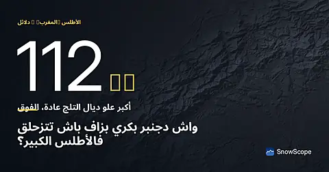
فأوكايمدن، دجنبر كيعطي 18 سم فنص الجبل فشهر عادي، مقابل 44 سم ف فبراير و53 سم فمارس. أشنو كتقول 46 شتوة على الشهر المزيان للتزحلق.

Galtür فدجنبر: 55 سم فالوسط نهار 15 دجنبر عادي، 93 % ديال الشتوات فيهم 30 سم فنص دجنبر؛ النهار فالموسم الهادي 55,50 EUR حتى ل 18 دجنبر.

Geilo فدجنبر: 57 سم فالوسط نهار 15 دجنبر عادي، و 96 % ديال الشتوات فيهم 30 سم فنص دجنبر؛ النهار من 590 NOK (تقريبا 56 EUR).

Grandvalira غالبا ما كيتم التسويق ليها كوجهة رخيصة للتزلج فديسمبر، ولكن العلو ديال التلج الطبيعي فالباز فالمتوسط غير 9 سم فالشتوات اللي فاتو.

Hemsedal فدجنبر: 70 سم فالوسط و 106 سم فالفوق نهار 15 دجنبر عادي، ولكن 32 سم لتحت؛ و Geilo حداها من 590 NOK للنهار.

Hintertuxer Gletscher فدجنبر: 98 سم ف 3245 م و 52 سم فالوسط نهار 15 دجنبر عادي؛ السكيباس ديال نهار 82 EUR، و 6 أيام 399 EUR.

قارن حظوظ التلج فـ دجنبر وأثمنة الفورفي المراقبة ابتداءً من 40.00 EUR فـ محطات التزلج الإيطالية لرحلة الويكاند بالطوموبيل.

السكي ف Kühtai فدجنبر: 60 سم فالتحت (1939 م) نهار 15 دجنبر عادي، والسكيباس ديال 6 أيام فالموسم الهادي ب 269 EUR حتى ل 18 دجنبر.

Les 2 Alpes كاتوصل ل 3511 م باش تضمن التلج ف دجنبر 2026، مع فورفي ديال 6 أيام للكبار ب 266.50 EUR.

Les Karellis كتوفر 45 كم ديال البيست وواحد الباس ديال 6 أيام للكبار بـ 191,00 EUR مع احتمال ديال 98 % ديال التلج فوسط الجبل فآخر دجنبر.

Levi فدجنبر: 38 سم نهار 15 دجنبر عادي، 91 % ديال الشتوات فيهم 30 سم فسيمانة نوال، وتلج كثر من زمان؛ النهار 60 EUR، و 57 EUR أونلاين.

تزلج فـ Livigno بـ 51,50 EUR للنهار قبل 18 دجنبر، فاش كيوصل العلو ديال التلج فالقمة لـ 30 سم فـ 100 % من الشتوات اللي فاتو.

فميشليفن، 89 % من الشتوات ماعندهمش تقريبا تلج نهار 15 دجنبر (أقل من 5 سم). أشنو كتقول 46 شتوة على التزحلق فالأطلس المتوسط ف دجنبر.

Montgenèvre عندها 56 سم ديال التلج فالمعتاد فديسمبر فالباز ديالها، وهادشي كيخلي السواق ديال الويكاند يلقاو تلج كتر من Sestriere اللي فجهة خرى ديال الحدود.

السكي ف Obertauern فدجنبر: 43 سم نهار 15 دجنبر عادي فالوسط، والسكيباس ديال 6 أيام ب 331 EUR قبل نوال.
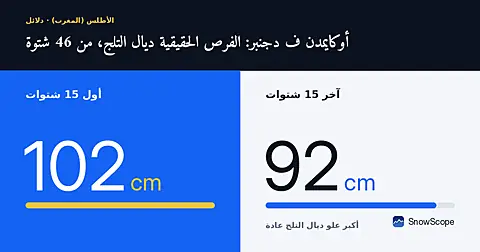
أوكايمدن فنص دجنبر: 16 سم فنص الجبل فشتوة عادية، 50 سم ولا كثر فغير 11 % من الشتوات. تاريخ بتاريخ، أشنو كتقول 46 شتوة.
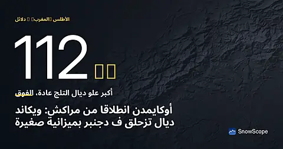
أوكايمدن بعيدة ب50 كم بخط مستقيم من مراكش. كيفاش تنجح ف ويكاند ديال تزحلق ف دجنبر: فوقاش تمشي، شنو هي فرص التلج، أشنو كنعرفو على الأثمنة.
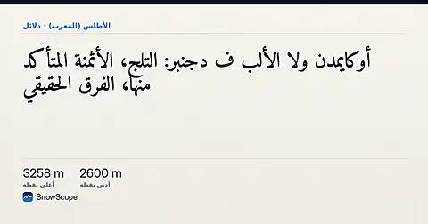
Les 3 Vallées: 75.70 € فالنهار من 5 حتى 18 دجنبر 2026. أوكايمدن: بلا تعريفة رسمية أونلاين، 16 سم فنص الجبل فنص دجنبر. المقارنة الصادقة.

Pila فوق Aosta كتقترح تمن موحد ديال 60.00 EUR للنهار مع تلج مضمون فدجنبر فالجهة الفوقانية.

المحطات ديال Saas-Fee كتوصل لـ 3556 م فين التاريخ ديال التلج ديالنا كيبين بلي 100 % من الشتوات اللي فاتو كان عندهم على الأقل 30 سم ديال التلج فمنتصف ديسمبر.
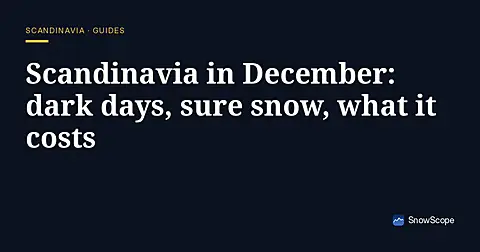
12 محطة شمالية فدجنبر: Hemavan و Hemsedal و Geilo كان فيهم 30 سم فالوسط فنص دجنبر ف 96 حتى 100 % ديال الشتوات؛ النهار ففنلندا 58-60 EUR.

فرص التلج ف دجنبر من 46 شتوة وأثمنة النهار اللي تأكدنا منهم: Ski Cooper 49 $، Les 3 Vallées 75.70 €، Oukaïmeden بلا تعريفة رسمية. فين كتخدم نهار تزحلق رخيص ف دجنبر.

اكتشف البيستات الهادئة فـ St-Luc Chandolin فين العلو ديال التلج فـ نص الجبل وصل لـ 30 سم فـ 98 % من الشتوات اللي فاتو فـ أواخر شهر دجنبر.

Trysil فدجنبر: 44 سم فالوسط نهار 15 دجنبر عادي، و 83 % ديال الشتوات فيهم 30 سم فنص دجنبر؛ الأثمنة متبدلة، حجز بكري.

Valloire-Valmeinier كتوفر على 131 كم ديال البيست، واحتمال 98 % يكون العلو ديال التلج 30 سم فـ وسط المحطة فـ نص دجنبر.

Zugspitze فدجنبر: 122 سم ف 2627 م نهار 15 دجنبر عادي، السكيباس ديال نهار أونلاين 70,50 EUR؛ Garmisch-Classic لتحت ب 69 EUR وتلج قل بزاف.

Mölltaler Gletscher فدجنبر: 66 سم فأول تيليسييج (2103 م) و 128 سم فالوسط نهار 15 دجنبر عادي؛ 6 أيام فالموسم الهادي ب 332 EUR.

Mt. Baker ف دجنبر: 46 in (116 cm) ديال التلج ف وسط الجبل ف 15 دجنبر العادي، والتيكي من الاثنين للخميس بـ98.80 $، كيتباع غير نهار بنهاره فالكيشة.
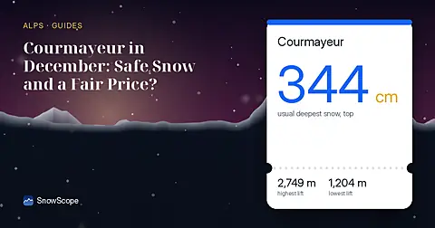
واش المبتدئ اللي كيخاف يقدر يتيق فـ Courmayeur ف شهر دجنبر، فاش العلو ديال التلج ف الوسط كيوصل ف المعدل لـ 60 سم ف الشتوات اللي فاتو؟
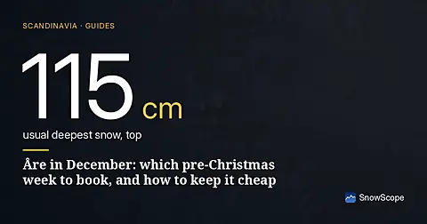
Åre فدجنبر: 40 سم فالوسط نهار 15 دجنبر عادي، و 89 % ديال الشتوات فيهم 30 سم فنص دجنبر، ولكن نقص كبير فالفوق من الثمانينات.


هاهي الخرائط الجديدة ديال جوج سيمانات الجايين فالأطلس (المغرب)، من 13 نونبر حتى ل 26 نونبر: التلج الجديد المتوقع على الأرض، مقري من جوج الموديلات …

تقرير التلج فالأطلس (المغرب)، 12 نونبر. المحطات ديال التزلج فالأطلس اليوم: حتى تلج فالبيستات. التلج غير فالقمم اللي فالفوق: تقريبا 40 كم² ديال الأرض …

باقي ما كاينش التلج فأوكايمدن: 0 سنتيمتر فالتلاتة ديال العلوات، والو فآخر 7 أيام، والو فالسيمانة الجاية. شنو كيجيب نونبر عادي للأطلس الكبير وفوقاش تخطط للتزلج.

التلج تبدل من نهار 9 نونبر، من 40 كم² ل 20 كم² اليوم؛ ونهار 14 نونبر التوقعات ديالنا كتعطي 10 كم². اليوم البيستات ديال الأطلس عريانين. غير القمم …

فوق 1500 م دايرين بتوبقال، الأرض بقات بيضا 94 يوم فشتوة 2025-26، أكبر رقم ف26 شتوة ديال الصور ديال الساتليت. حتى لفين نزل التلج، فوقاش مشى، وكيفاش كتتقارن هاد الشتوة مع 2008-09 ومع العوام الناشفين.

قارنّا التلج اللي كاين نهار 10 نونبر مع أكبر علو ديال التلج فكل موسم، ف 46 محطة ديال التزلج وعلى 46 موسم. البداية بالتلج كتعاون، ولكن أقل من داكشي اللي كيتخيلو بزاف ديال المتزلجين.

عاصفة نهار 4 نونبر خلات بين 8 و 13 inches ديال التلج الجديد ف خمس محطات عاليين ف كولورادو قراب من Aspen. من بعد خمس أيام، النص منو مشى. شنو كيعني هادشي لنهارات البودرة.

شحال بقات جبال البيريني بيضا كل شتوة من 2000-01، كيف كيشوفها الساتليت، والعلو ديال التلج ف10 محطات عندهم سلاسل طويلة. تلاتة ديال الشتوات ضعاف ورا بعضياتهم سالاو ف2025-26؛ وهاد الخريف بدا عادي.

خريطة ديال الميلان فـLes Grands Montets وسبع محطات تزلج أخرى كتبين شحال من الأرض كتفوت 30° و35° و40°، وعلاش هاد الحد مهم للانهيارات الثلجية.

ف 24 شتاء من 46، المحطات اللي فالجهة الإيطالية وجنوب الألب الفرنسية جاتهم شتوية كبر نسبيا من الجهة الشمالية. المبيان، العوام الكبار، والطقس اللي كان موراهم.

التلج فدجنبر كيتعلق قبل كلشي بالعلو. 46 شتوة فاتت ف676 محطة فالألب كيبينو شحال ديال التلج تتسنى نهار 1 و15 و22 دجنبر، من تحت 1200 م حتى لفوق 2400 م.

Whistler Blackcomb طاح فيها 75 سم ديال التلج الجديد فالقمة فسيمانة، ومن بعد جات عاصفة سخونة فيها 124 مم ديال الما. دليل ساهل على القاعدة، التلج الجديد، الشتا والقشرة.

برنامج رخيص ديال 3 أيام فبحيرة كومو فدجنبر بالأثمنة الحقيقية ديال 2026-27: الترينو، البابور، الفونيكولير والتزلج ف Piani di Bobbio ولا Madesimo، شحال كتوفر مقارنة مع كورتينا، والحظ ديال التلج فالعيد.

8 سم: هادا هو أكثر تلج كيلقاه الموديل ديالنا فالأطلس اليوم. المحطات ديال التزلج فالأطلس مافيهومش التلج اليوم. الموديل ديال التلج ديالنا كيلقى التلج …

التلج ديال اليوم فليفينيو، شنو كيقول التوقع الموسمي الأوروبي على دجنبر، وعلاش العلو كيغلب الشهر السخون نهار 25 دجنبر.
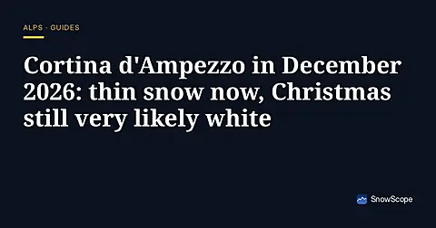
التلج ديال اليوم فكورتينا، التوقع الموسمي الأوروبي لدجنبر، والحظوظ ديالنا باش يكون نهار 25 دجنبر أبيض فالدولوميت الشرقية.

فين دجنبر 2026 غيكون فيه التلج كثر ولا قل فالدولوميت من Val Gardena حتى لكورتينا: التوقع الموسمي الأوروبي، الخريطة ديالنا والحظوظ ديال 25 دجنبر أبيض.

شحال ديال الما يقدر يحبس التلج ديال الأطلس ففبراير 2027: التوقع الموسمي الأوروبي سخون بتقريبا 3 درجات وفيه الشتا كثر فالغرب والجنوب، والحظوظ ديال التلج باقة ضعيفة فالأحواض ديال المغرب.

التوقع الموسمي الأوروبي كيخلي يناير 2027 سخون بتقريبا 2 درجة فالأطلس. التوقع ديالنا للعلو ديال التلج، الما اللي فالتلج، والما المخزون للوديان ديال المغرب.
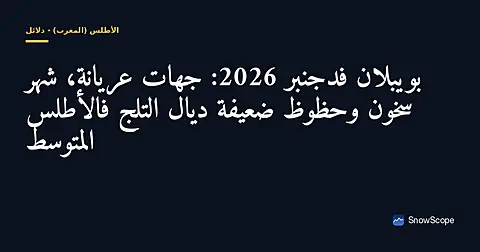
بويبلان باقي عريان. التوقع الموسمي الأوروبي كيشوف دجنبر سخون بوضوح، وفكاع الأطلس المتوسط اللي كيطيح فيه التلج الحظوظ ديالنا مايلة لتلج قل.

فين دجنبر 2026 غيكون فيه التلج كثر ولا قل من مونتانا حتى لنيو مكسيكو: التوقع الموسمي الأوروبي والخريطة ديالنا، مع كولورادو ويوتا والروكي الشمالية.
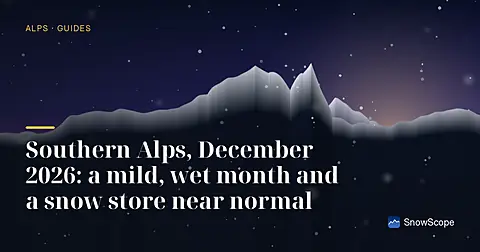
واش الغطا ديال التلج من Écrins حتى للألب البحرية و Piemonte غيتعمر بحال العادة فدجنبر 2026؟ التوقع الموسمي الأوروبي والخريطة ديالنا، جبل بجبل.
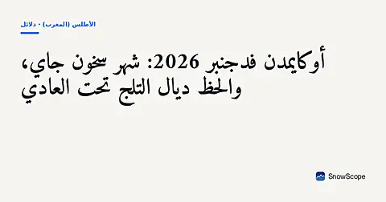
باقي ما كاينش التلج فأوكايمدن. التوقع الموسمي الأوروبي كيشوف دجنبر سخون كثر فالأطلس الكبير، والخريطة ديالنا كتبين حظوظ قل فتقريبا كاع القمم.

التلج ديال اليوم ف Grands Montets، التوقع الموسمي الأوروبي لدجنبر، والخريطة ديالنا فين غيكون التلج كثر ولا قل حدا مون بلان.

Vail بالأرقام: القمة العادية تقريبا 64 in (162 cm) فالوسط ف 46 شتوة اللي فاتو، مارس أكثر شهر فيه التلج، مع البيستات، الطريق والسلامة.

Zermatt بالأرقام: فين كيبقى التلج، أضمن الشهور وكيفاش توصل للقرية اللي بلا طوموبيلات، من 46 شتوة اللي فاتت.

Steamboat فـ Colorado للعائلات: شنو كيناسب الصغار بزاف، الدراري، المراهقين والواليدين، مع التلج ديال 46 شتوة اللي فاتو فتلاتة ديال العلوات.

واش Verbier مزيانة للمبتدئين؟ إمتى التلج أحسن؟ كيفاش توصل؟ الأجوبة على 4 Vallées و 46 شتوة اللي فاتت.

كيفاش تدوز أول نهار ف Park City Mountain، Utah، وإمتى تمشي: التاريخ ديالنا كيعطي تقريبا 71 in (180 cm) فالقمة العادية فالوسط ف 46 شتوة اللي فاتو.

Sella Ronda من Sëlva ف Val Gardena: الكولات ديال Gardena و Campolongo و Pordoi و Sella بالترتيب، مع التاريخ ديال التلج ديالنا ف 46 شتوة اللي فاتت.

Mt Baker، Washington: تقريبا 133 in (337 cm) فالقمة العادية فالوسط ف 46 شتوة اللي فاتو، رقم قياسي عالمي ديال التلج، وماكاينش فين تبات فالجبل.

Val d'Isère و Espace Killy للمبتدئين، المتوسطين والمحترفين، مع التلج ديال 46 شتوة اللي فاتت فتلاتة ديال العلوات.

خطط ل Mammoth Mountain حسب الموسم: تقريبا 93 in (235 cm) فالقمة العادية فالوسط ف 46 شتوة اللي فاتو، مارس أكثر شهر، ربيع طويل وشتوات كتبدل.

Kitzbühel مشهورة وواطية. شنو كيقولو 46 شتوة اللي فاتو على التلج ف 762 م، 1,377 م و 1,993 م، شنو تبدل، وأشمن سيمانات أضمن.
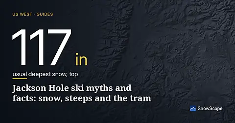
الخرافات على Jackson Hole مقارنة مع الحقائق والتاريخ ديالنا: تقريبا 80 in (204 cm) فالقمة العادية فالوسط ف 46 شتوة اللي فاتو، بلا نقصة واضحة.

قارنّا الخريطة ديال العلو ديال التلج ديال SnowScope مع 2012 محطة ديال القياس: RMSE 7.7 سم، الفرق -0.5 سم، تلج ولا ما كاينش صحيح ف 88 % ديال المرات. شنو خدام، شنو باقي، وشنو غادي نحسنو من بعد.

عشرة ديال النقط العملية لسفرية ديال التزلج ل Livigno: الطرقان، البرد، الحوانت بلا ضريبة، الجوج ديال الجهات والوقت الأحسن للتلج، من 46 شتوة اللي فاتت.

الوصول ل Telluride فالشتا، مطار بمطار: Telluride Regional، Montrose، الطريق 145 مع القانون ديال الجر ديال Colorado، والتيليكابين فابور حتى ل Mountain Village.
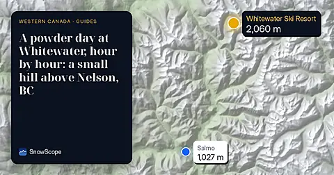
كيفاش كيدوز عادة نهار ديال التلج ف Whitewater حدا Nelson، من أول شوفة للتوقعات حتى لآخر هبطة، مع التلج ديال 46 شتوة اللي فاتو فتلاتة ديال العلوات.

Arc 1600 و 1800 و 1950 و 2000 مقارنين فالتلج، البيستات والطريق، مع 46 شتوة اللي فاتت من التاريخ ديال التلج ديالنا فتلاتة ديال العلوات ف Les Arcs.

الوصول ل Snowbird فالشتا: طريق وحدة فالكانيون (SR-210)، قانون العجلات ديال Utah، الطوبيس ديال UTA والطريق من المطار ديال Salt Lake City.

Whistler Blackcomb لكل مستوى، مع التاريخ ديالنا: تقريبا 370 cm فالقمة العادية فالوسط ف 46 شتوة اللي فاتو، مارس وأبريل أكثر شهور فيهم التلج.

من الفلاحة ديال Walser حتى ل Weißer Ring: التواريخ اللي صنعات Lech Zürs، ومن بعد التاريخ ديال التلج ديالنا زمان ودابا، أول خمسطاش من 46 شتوة اللي فاتو مقابل آخر خمسطاش.

بالطوموبيل ل Palisades Tahoe فالشتا: المسافات من Reno و Sacramento، السناسل R-1 حتى ل R-3 فكاليفورنيا، الباركينغ بالحجز، والطوبيس TART فابور.

لائحة عملية ل Stowe فـ Vermont: الطبقات، حماية الوجه، الماسك، الكارات محدودين والسخانات، مربوطة بالتلج ديال 46 شتوة اللي فاتو فـ Mount Mansfield.

السكي ف Lake Louise فالبداية ديال الموسم: علاش كتبدا بكري، كيفاش كيكون التلج ديال نونبر ودجنبر عادة ف 46 شتوة اللي فاتو، وكيفاش تتزلج على تلج مازال رقيق.
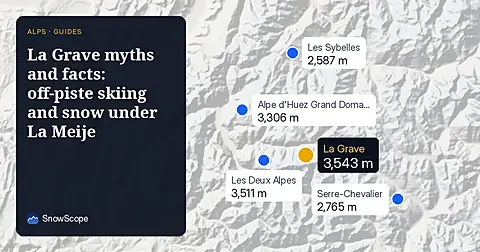
شنو الصحيح على La Grave، الجبل ديال برا البيست تحت La Meije: الأرض، السلامة، التلج فكل شهر والاتجاه، من 46 شتوة اللي فاتت.

Big Sky فـ Montana ساهلة تتخيلها: 5,850 acres تحت Lone Peak، وتلج تقريبا خمسة ديال المرات كثر قريب من القمة على التحت ف 46 شتوة اللي فاتو.

أندورا ماعندهاش مطار كبير: كيفاش توصل ل Grandvalira من Barcelona ولا Toulouse، النفق ديال Envalira، الطريق CG2 والباركينغات.

Magic Mountain ف Londonderry فـ Vermont: محطة صغيرة مستقلة فيها غابة واقفة، تيليسييج حمر قديم وتلج طبيعي رقيق. خمسة ديال الحوايج، مع التلج ديال 46 شتوة اللي فاتو.

تزلج الفرق ديال العلو كامل ديال Revelstoke فراسك اللول: التلج فالقمة، فالوسط وفالتحت فالواد ف 46 شتوة اللي فاتو، وإمتى كل جزء كيكون فأحسن حالة.

سبع أيام ف Silvretta Arena، نهار بنهار: فين كاين التلج، إمتى تدوز ل Samnaun، وشنو كيقولو 46 شتوة اللي فاتو على التلج ديال Ischgl ف تلاتة ديال العلوات.

Aspen Snowmass مقارنة: Snowmass فيها تقريبا 75 in (190 cm) فالقمة العادية فالوسط ف 46 شتوة اللي فاتو، و Aspen Mountain تقريبا 69 in (174 cm).
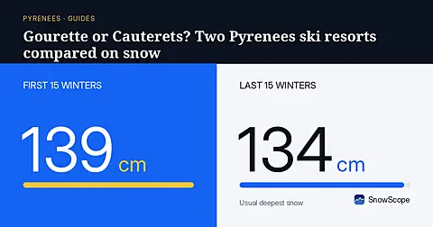
Gourette و Cauterets جنب لجنب: العلو، التلج العادي فكل شهر، أحسن السيمانات والطريق، من 46 شتوة اللي فاتت.

Mad River Glen، Vermont: تلج طبيعي، تقريبا 30 in (75 cm) فالقمة العادية فالوسط ف 46 شتوة اللي فاتو، فبراير أكثر شهر. تلت طرق باش تخطط للنهار.

Banff Sunshine Village شهر بشهر: تقريبا 100 cm فالوسط فمارس عادي ف 46 شتوة اللي فاتو، أبريل أكثر شهر فالفوق، والموسم حتى ل آخر ماي.

Saas-Fee بلا طوموبيلات: التران ل Visp والطوبيس PostBus 511، الطريق ديال وادي الرون والترينات ديال الطوموبيلات، الباركينغ والطوبيسات فابور.

تقريبا 109 in (276 cm) هي القمة العادية ديال Alta فالوسط ف 46 شتوة اللي فاتو. هنا: علاش السنوبورد كيبقى فالدار، أحسن الشهور وكيفاش تطلع الكانيون.

Alpe d'Huez مقابلة للشمس. كيفاش تنظم النهار بالساعة وبالعلو، مع التلج ديال 46 شتوة اللي فاتت من القرى اللي لتحت حتى ل Pic Blanc.

السلسلة ديالنا ديال 46 شتوة فالألب، 108 نقطة من 667 حتى ل 3872 م: أيام التلج نقصو فكلشي، وبوضوح ف 81 %. شنو تبدل وعلاش.

فالعلو ديال Oukaïmeden، السلسلة ديالنا ديال 46 شتوة كتبين 12 % أيام ديال التلج أقل؛ تحت، الإشارة كتضيع فالفرق الكبير بين الشتوات.

Baqueira-Beret كاينة ف Val d'Aran، فالجهة الأطلسية ديال البرانس. شنو كيعني هادشي للتلج ديالها، مجرب ب 46 شتوة اللي فاتو مقارنة مع La Molina، وإمتى تمشي.

بورتريه ديال Bonneval-sur-Arc ف Haute-Maurienne: سقوف ديال الحجر، كول مسدود، دومين صغير وتلج غليظ كيفاجئ، من 46 شتوة اللي فاتت فالتاريخ ديال التلج ديالنا.

كيفاش تدوز أول نهار تزلج ف Chamonix، من Grands Montets فوق Argentière حتى ل الوقت المناسب لكل بيست، مع 46 شتوة ديال المعطيات.

Cortina d'Ampezzo بتلاتة ديال الطرق: Tofana، Faloria-Cristallo و Cinque Torri-Lagazuoi، مع 46 شتوة ديال المعطيات فتلاتة ديال العلوات.

Chantarella، Marguns، Piz Nair، White Turf: الكلمات اللي كتسمع ف St. Moritz، مشروحين، وشنو كيقول التاريخ ديال التلج ديالنا ف 46 شتوة اللي فاتت على كل علو ف Corviglia.

Davos و Klosters كيتقاسمو ستة ديال الجبال ديال التزلج. برنامج نهار بنهار، كيبدا ب Parsenn، مع شنو كيقول التاريخ ديال التلج ديالنا ف 46 شتوة اللي فاتت على العلوات ديالو.

إمتى تحجز Courchevel و 3 Vallées، أشمن قرية تختار وفين كيبقى التلج، من 46 شتوة اللي فاتت.

St. Anton و Ski Arlberg طول الشتا: العلو العادي ديال التلج فكل شهر فتلاتة ديال العلوات، من 46 شتوة اللي فاتت.

عام ديال التلج ف Sölden، مرحلة بمرحلة: إمتى كيبيضو الكلاسيي، الويكاند ديال كأس العالم، الوسط الطويل ديال الشتا والسيمانات ديال الربيع، من 46 شتوة اللي فاتو ف تلاتة ديال العلوات.

أيام التلج نقصو ف 120 نقطة اللي درسنا فالبرانس من 1980-81، وكثر تحت 1500 م: السلسلة ديالنا ديال 46 شتوة والبحث العلمي.

كناش عملي على Oukaïmeden فالأطلس الكبير: إمتى كيجي التلج غالبا، شحال، أشمن جهات تختار وكيفاش توصل من مراكش.

كيفاش تدوز نهار مزيان ف Luz-Ardiden، دومين صغير فوق Luz-Saint-Sauveur فالبرانس العليا: الطريق، الجوج جهات، التلج ديال 46 شتوة اللي فاتو، وأشمن سيمانات تختار.

Michlifen، حدا إفران، التلج فيها كيجي نوبات قصار ماشي موسم كامل. شنو كيبينو 46 شتوة اللي فاتو، علاش العلو العادي صفر، وكيفاش تكون تما فالنهارات المزيانين.

تلاتة ديال الطرق باش تدوز نهار من Méribel: للشرق نحو Courchevel، للجنوب نحو Val Thorens، ولا فالدار فوق Mont Vallon، مع التلج ديال 46 شتوة اللي فاتت فتلاتة ديال العلوات.

الحد ديال التلج قريب من 3710 م من 8 حتى 12 نوفمبر: شتا فـ أوكايمدن وإمليل، تلج فـ قمة توبقال. خريطة وشارط.
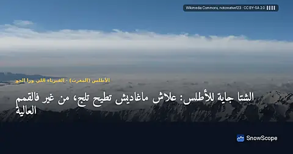
تقريبا 65 مم فوق Toubkal حتى ل 12 نونبر، ولكن علو 0 °C كيبقى قريب من 4,000 م: الشتا ف Oukaïmeden وفالوديان، والتلج غير فالفوق.

المحطات ديال التزلج فالأطلس مافيهومش التلج اليوم. الموديل ديال التلج ديالنا كيلقى التلج غير فالقمم العالية: تقريبا 80 كم² ديال الأرض اللي فيها التلج، …


شكون هي المحطات اللي ديما فيها التلج تقريبا؟ شفنا 46 ديال الشتوات اللي فاتو (1980-81–2025-26) لكل محطة فالخريطة ديالنا، وحسبنا الأيام من 15 دجنبر حتى …

Oukaimden طاح فيها 14 سم ديال تلج جديد ف 72 ساعة اللي فاتو، منهم 5 سم ف 24 ساعة اللي فاتو. دابا فيها تقريبا 3 سم فالجهة الفوقانية، حسب الموديل ديال …